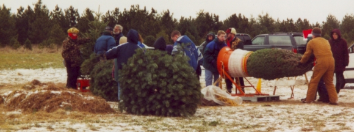

Merry Christmas, 2019!
Opening day is Friday the 29th Thanksgiving weekend and we will be open Saturdays and Sundays from then thru December 22. We open at 9:00 a.m. and close our gates to new visitors at 4:00 p.m.
Alice and Bill Howenstine
$60
Pioneer Tree Farm is motivated by a love of nature, and the care of it. We’ve been raising trees for 45 years, hoping to foster an appreciation of a simpler life, the togetherness of Christmas and gratitude for this little corner of the Earth.
Though using a cut tree might seem like an odd way to protect the environment, it actually does protect the environment. Our trees remove carbon dioxide from the air, provide habitat for wildlife, protect soil from erosion, add scenic beauty to the countryside, provide an outdoor experience to thousands of people every year, and bring nature into their homes. Our trees are a crop which keeps the land agricultural -- when trees are cut, more are planted. We raise our trees organically, and use no pesticides as we contend with weeds and other tree pests (occasionally we do use an herbicide on the stumps of some invasive hardwood species). Most of the workers during tree sales are volunteers from the Environmental Defenders of McHenry County, and we donate a percentage of tree sales to the Defenders.
Along with selling Christmas trees, we deliver an experience and a tradition 45 years old, inspired by hundreds of years of history. As you walk around to look for your tree, we hope you will enjoy the country air and the diversity of vegetation on our tree farm, perhaps see some wildlife, and have fun with other friendly people!
Explore our many fields which are replanted yearly. Tree types include Fraser firs, concolor (or white) firs, white pines, red pines, Scotch pines, blue and white spruce, and red and white cedar. Tractor drawn wagons circulate through our fields so you needn't carry your tree all the way back. We will your tree and help you tie it to your roof if needed. Bring your own hand saw, or use one of ours, but no power saws or axes please.
Be sure to visit the Warming House where you can get a cup of hot cocoa or coffee, and purchase snacks, gifts and goods hand crafted by local artisans. Right outside there is a campfire to keep you warm all day.
After you get your tree, visit our historic skills area. The exact crafts and skills vary from day to day, but include demonstrations of cast iron cooking, blacksmithing androping, an opportunity to feed the chickens, and the ever popular candle dipping and making of wooden candle holders. Take a short self guided tour of our winter garden, play king of the stump, or try to get your whole group cooperating on our walking boards.
The farm can be a photographer's dream for you and your family, with an old-fashioned sleigh, chickens to feed, and a midwestern backdrop dense with trees.
Please feel free to get in touch with us for additional information.
(815)-385-8512
pioneertreefarm@oawl.net
4614 Pioneer Rd, McHenry, IL 60051
For first timers, or if you'd like a refresher from your last visit!
